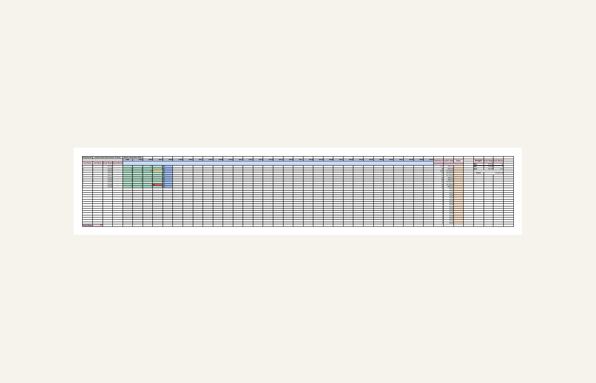
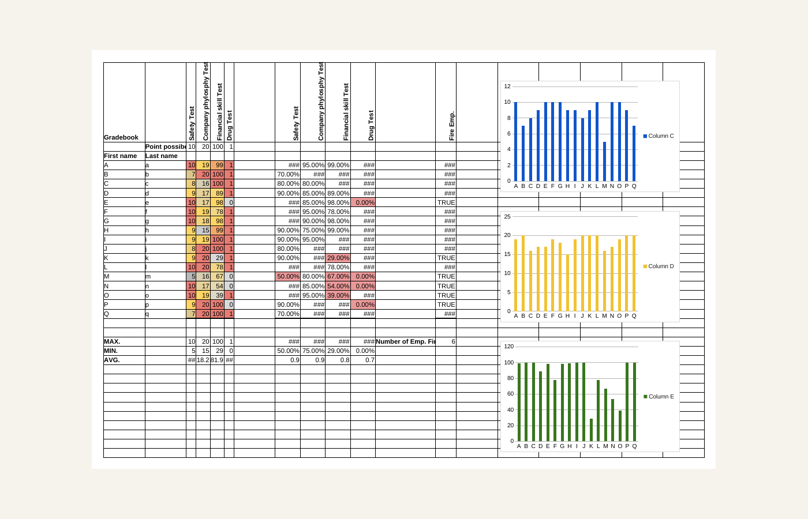
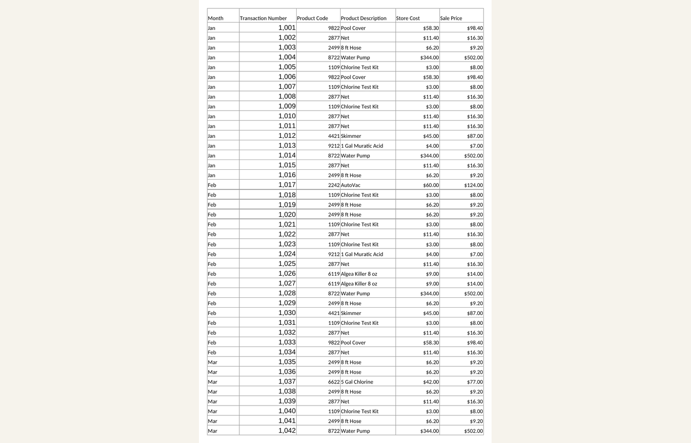
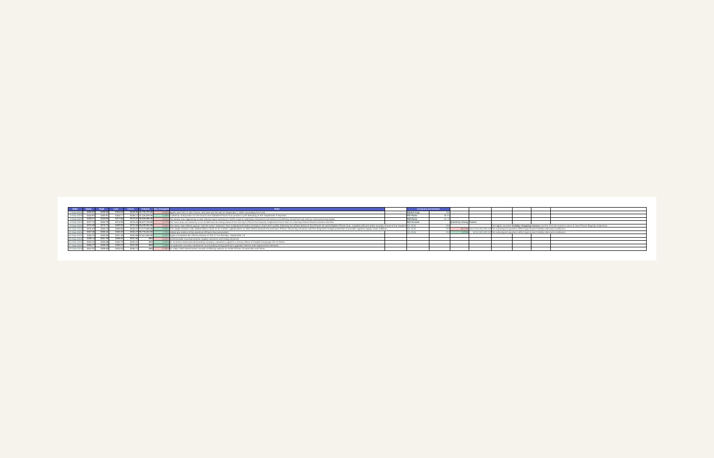
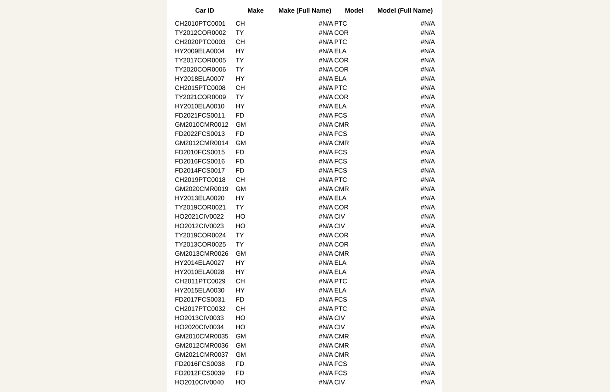
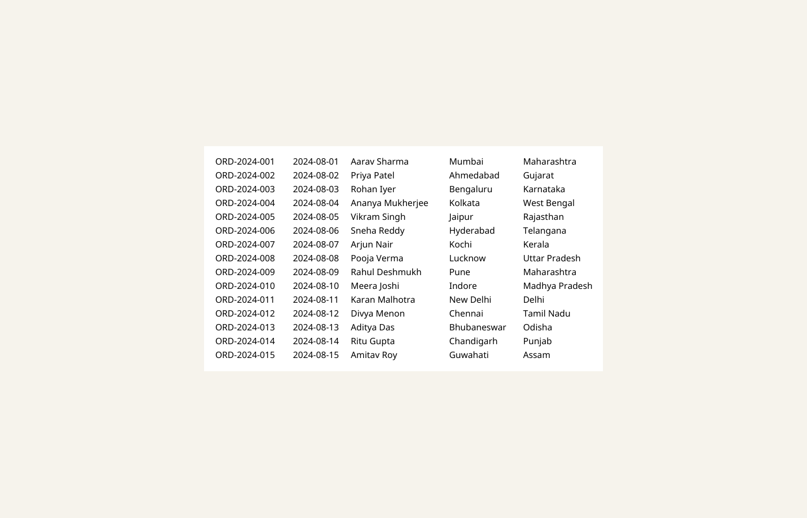
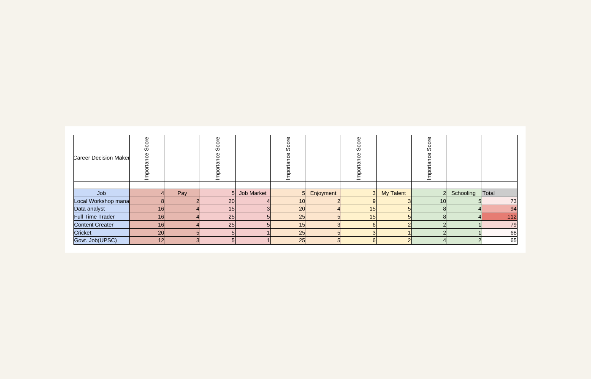

Spreadsheet analysis
Excel and Google Sheets work: formulas, cleanup, organization, summaries and reporting.
DATA • FINANCE • LEARNING IN PUBLIC
I'm Vivek — a career-switcher building practical skills in Excel, Google Sheets, data analysis and financial data as I work through a 10-month journey toward Data Science for Quantitative Trading.
Starting from a BA in English and building an in-hand, project-based skill set from scratch.
Hi, I'm Vivek.
I’m learning by building, documenting the process, and putting every concept through a small real project.
My current work is intentionally simple: spreadsheets, formulas, data cleaning, Pivot Tables, trackers and basic financial analysis. The goal is not to look like a finished data scientist — it is to build the foundation properly.
What I'm building
Excel and Google Sheets work: formulas, cleanup, organization, summaries and reporting.
Stock trackers and company-analysis exercises using market and fundamental metrics.
A transparent record of what I build, what breaks, and what I understand next.
Selected work
Small projects. Real practice. Clear lessons.

Employee hours, wages, cumulative pay, status tracking and conditional formatting.

Basic calculations, conditional formatting and chart experiments while learning spreadsheet analysis.

Grouped sales, profit and commission summaries built from a flat sales dataset.

Daily OHLCV data, percentage changes, notes and company essentials for market-learning practice.

Practice with VLOOKUP, LEFT, MID, CONCATENATE, IF and derived inventory fields.

Product lookup, unit pricing and order-total calculations across linked sheets.

A structured scoring sheet built from scratch to practise spreadsheet logic and decision frameworks.
The bigger project
Excel / Google Sheets, market vocabulary, fundamental analysis and practical spreadsheet projects.
SQL, querying, structuring data and working with real datasets.
Python, statistics, probability and technical-analysis foundations.
Machine learning on financial data and a portfolio that proves what I've built.
Writing
Contact
I'm currently open to entry-level spreadsheet and data work while I continue building my data-science skill set.
Vivekbiswas.ds2510@gmail.com ↗